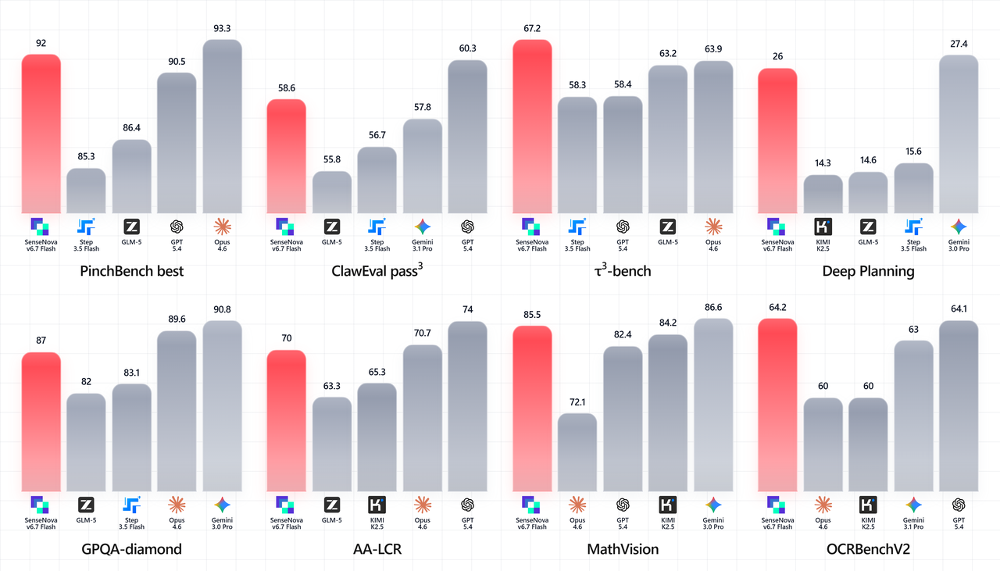
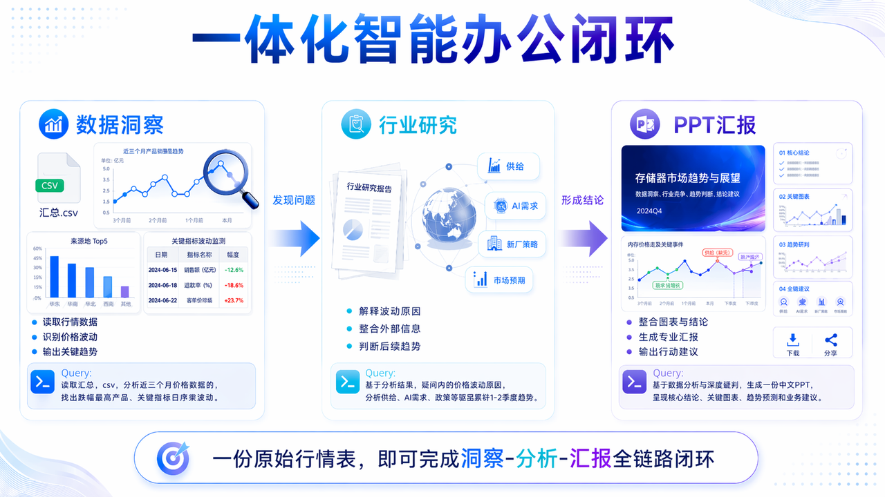

商汤日日新原生多模态智能体模型，胜任数据分析、深度调研、复杂图片理解、PPT 生成等复杂办公任务。现已推出 Token Plan，更快、更好、更省。
为智能体赋予原生视觉能力，让你的 Agent 与你共享"视界"。
轻松支撑长链路、多步骤的复杂办公任务，数据分析、PPT、深度调研、信息图统统不在话下。
相较于纯文本智能体，在信息搜索等场景下 Token 节约 60%。i基于长链路复杂任务，对比市面主流最新 Agent 模型，平均估算所得，根据实际执行任务不同可能存在波动。
SenseNova 6.7 Flash-Lite 是面向真实工作流的轻量多模态智能体模型，SenseNova U1 Fast 是多模态理解与生成一体模型。
与同体量模型对比，在长链路任务、规划能力与多模态理解上表现突出。

原生多模态 + 长链路推理，让模型不止"看懂"材料，更能拆解任务、规划步骤、直接产出图表 / 报告 / PPT 等最终交付物——从输入到结果一次跑完。
一份原始行情表即可跑通「数据洞察 → 行业研究 → PPT 汇报」的完整链路，数据、结论与成稿一次产出。
该图由 SenseNova U1 Fast 模型生成

Agent 在真实办公任务中跑通"读 → 想 → 做 → 交付"的全流程，下面是三个典型案例与对应产出物。
Skill 可按行业自由组合，覆盖教育、学术、金融、零售、制造、政企等多个行业的核心知识工作流。
8 项可组合的 Skill 组件，贯穿理解、执行、生成三层——独立调用解决单点任务，自由组合跑通长链路。
三层架构（理解 / 执行 / 生成）贯穿 8 项 Skill，形成完整的多模态能力栈。
模型能力并非面向单一场景，而是覆盖教育、学术、金融、零售、制造、政企等多个行业的核心知识工作流。
| 行业 | 细分场景 | 材料分析 | PPT 生成 | PPT 编辑优化 | 多源检索整合 | 报告撰写输出 | 表格理解与图像分析 | 数据分析结论 | Infographic 生成 |
|---|---|---|---|---|---|---|---|---|---|
| 教育 | 试题批改与学情分析 | ||||||||
| 教育 | 教案 / 课件生成 | ||||||||
| 学术 | 学术文章撰写辅助 | ||||||||
| 学术 | 文献综述与研究进展梳理 | ||||||||
| 金融 | 行业研究与公司深度分析 | ||||||||
| 金融 | 财务报表分析 | ||||||||
| 电商 / 零售 | 经营复盘与周月报 | ||||||||
| 市场营销 | 营销方案与竞品调研 | ||||||||
| 制造业 | 运营数据分析与管理汇报 | ||||||||
| 政务 / 企业服务 | 政策研究与材料撰写 | ||||||||
| 医疗 / 医药 | 医学资料整理与研究总结 | ||||||||
| 通用办公 | 汇报材料 / 总结 / 方案生成 |
SenseNova Token Plan，不止"用得便宜"，更要"用得安心"。我们提供更高效的精选模型 + 更富裕的用量保障，真正做到"长任务"也能"放心跑"，实现高价值、高频、可规模化交付的办公生产力能力包。